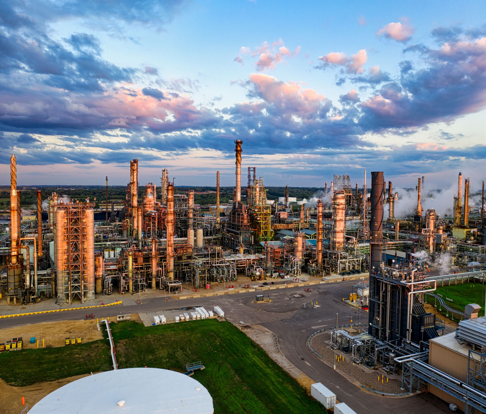
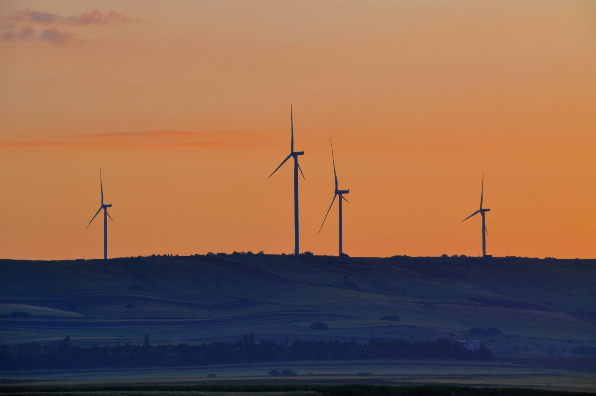
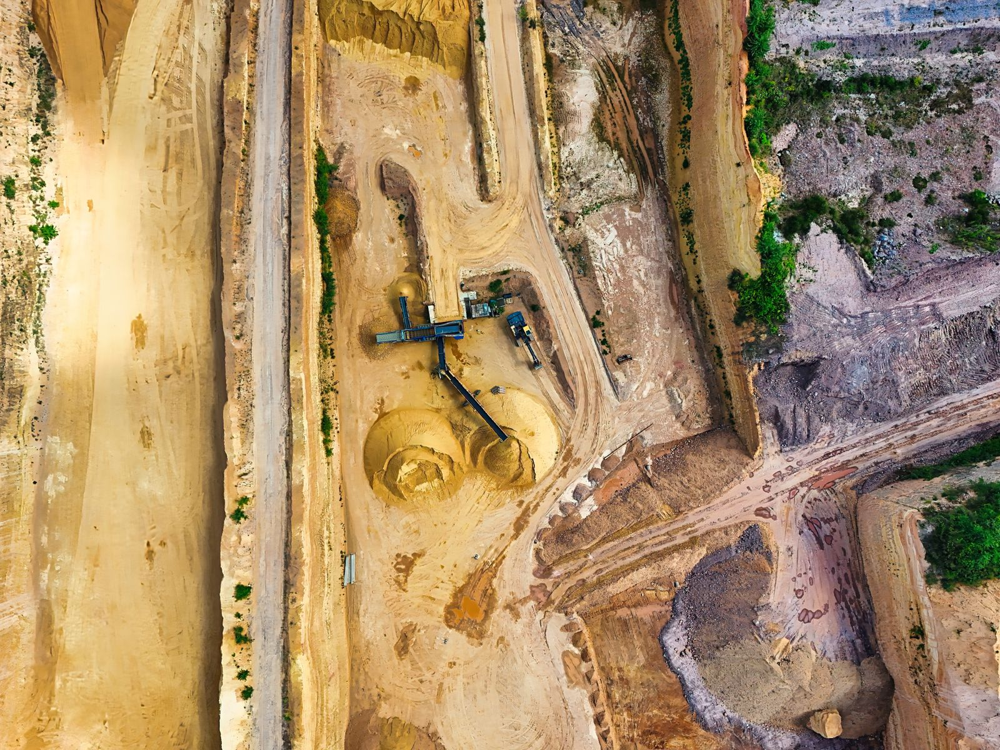

Intelligence for
the physical world.
The world runs on heavy industry.
Make every decision count.
A clearer view of
everything that matters.
Explore connected operationsYour operations.
One connected reality.
Behind every asset is a world of disconnected data. STRATUM brings it into context—so the people closest to the work can see the whole picture, and act on it.
From what happened.
To what happens next.
Connect sensor readings, engineering documents, and maintenance history in a shared operational model. Put the right evidence in the hands of the people who need it.
Explore a working exampleConnect the whole operation
Bring asset hierarchies, process signals, and work orders into a common view.
Give every signal context
Trace an anomaly to its equipment, operating conditions, and maintenance history.
Turn insight into action
Review the evidence, assign the next step, and keep human expertise in the loop.
- Location
- Process unit B
- Latest inspection
- 08 Oct 2026
- Evidence
- 3 connected sources
Real complexity.
Real-world impact.
Different environments. The same need for clarity.
Intelligence built around how your industry actually works.

Keep the world
moving forward.
From the generation fleet to the grid, connect performance, maintenance, and field knowledge to make more informed operational decisions.
- Asset reliability & maintenance
- Generation performance
- Connected field operations
See the signal.
Understand the story.
Explore a simple maintenance workflow. Select an asset to see how signals, history, and recommendations come together.
Cooling water pump
Vibration has increased over the past 48 hours. The last work order recorded bearing wear on the drive end.
Schedule a bearing inspection during the next planned maintenance window. Confirm operating conditions before changing the schedule.
An illustrative workflow using synthetic data. Recommendations require engineering review.

The next era of industry
is built on understanding.
The physical world doesn’t fit neatly into a spreadsheet. It is complex, interconnected, and constantly changing.
We believe industrial intelligence should meet that reality. Bring data closer to decisions. Technology closer to people. And possibility closer to the work.
Explore our approachBuilt for the world
that can’t stand still.
Start with one asset.
See the bigger picture.